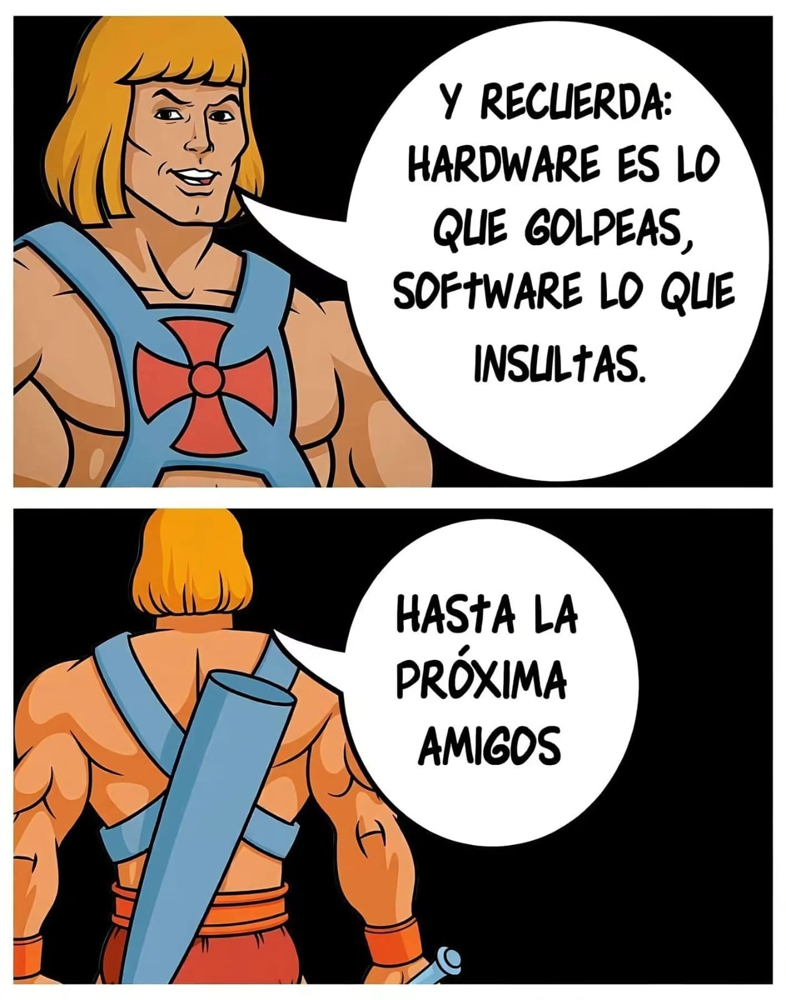

De la base a la cima • Cada piso es un aprendizaje
BECAS PARA LA VIDA • DE LA BASE A LA CIMA: ANALISTA DE DATOS
La tecnología no se trata solo de usar herramientas, sino de entenderlas.
🏗️ El cimiento: Sin una buena base, la torre se cae.
Sin este componente no hay análisis de datos. En este proceso todo empieza con una buena pregunta. Ejemplo: ¿De cuál producto vendo más y por qué?
Permite colaborar en equipo: compartir, organizar y construir juntos, sin depender de un solo dispositivo o de un solo lugar
🏗️ La infraestructura: Sin dónde guardar y organizar, no hay torre.
Ejemplo: Todo el curso organizado en Drive: material, evidencias y clases grabadas, sin perder nada.
Entrenamos la mente para descomponer problemas complejos en pasos finitos, claros y en orden.
🏗️ La estructura de acero: Sin orden, el código se cae.
Ejemplo: Un problema cotidiano también se resuelve paso a paso.
Problema: No sé qué comer
Paso 1: Preguntarse qué tengo ganas de comer: ¿dulce o salado?
Paso 2: Revisar qué hay en casa
Paso 3: Si hay algo de lo que quiero, prepararlo. Si no hay, buscar otra opción
Paso 4: Si no hay nada en casa, decidir si comprar o pedir a domicilio
Paso 5: Comer y revisar si quedé satisfecha
Fin: Problema resuelto
Separan estructura y estilo para que los datos no solo se vean bien, sino que se entiendan.
🏗️ Los acabados visuales: Sin estructura, el diseño no se entiende.
Ejemplo: Esta presentación se hizo con HTML y CSS, estructura + estilo.
Soluciones claras y escalables para automatizar tareas y organizar datos
🏗️ La dinámica del sistema: Aquí la torre empieza a moverse sola.
Ejemplo: El sistema de gestión para un emprendimiento con código escalable, que cada una podía adaptar a su propio producto o servicio
Aprendimos a movernos en la terminal de Colab y a crear nuestra estructura de carpetas con comandos.
🏗️ El centro de control: Quien controla la terminal, controla el sistema.
Ejemplo: Creamos mi_proyecto con datos, resultados y scripts solo con comandos.
Aprendimos a crear con IA: textos, imágenes, ideas y código. No solo a usarla, sino a dirigirla.
🏗️ El taller creativo: Donde usamos todo lo aprendido para crear textos, imágenes, ideas y código.
Ejemplo: Cada una creó sus activos digitales, su logo y su flyer para su emprendimiento, y una imagen libre de lo que quiso, con prompts.
La propuesta.
Todo se conecta: el pensamiento crítico nos hace preguntar, la nube nos permite trabajar, la lógica nos ordena, la web nos muestra datos, Python nos permite procesarlos, Linux los sostiene y la IA Generativa nos ayuda a crear y analizar más rápido.
🌍 El mirador: Desde donde vemos toda la torre que construimos y se abre el mundo de posibilidades.
El aprendizaje se construye nivel a nivel, con una base sólida que permite seguir subiendo y adquiriendo nuevos conocimientos.
La torre de los Fundamentos Tecnológicos está encendida y el mundo de los datos queda por descubrir y conquistar. 🎓

¡Gracias! Hasta la próxima, amigas. 💙